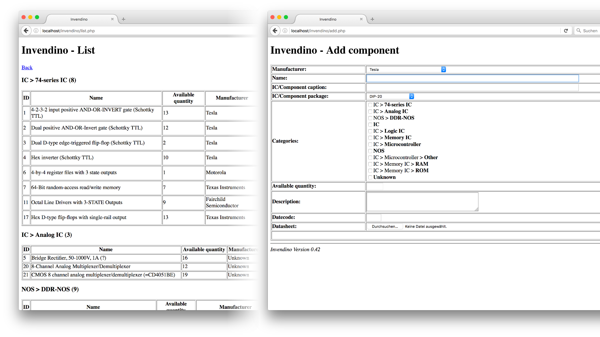

I have made a ton of applications over the year and I've not enough time to publish them all here. Furthermore some projects are unfinished and others are not ready to be released to the public. Therefore this page contains a list of all projects which fall in this category. The following table of contents might help to navigate:
- #1: Fontresize plugin
- #2: Simple ASP solver
- #3: A simple XML validator
- #4: Formlet - PHP forms made easy
- #5: Interactive Cocke-Younger-Kasami (CYK) algorithm
- #6: Cryptbag
- #7: Invendino
- #8: SHASUM for Windows
If you have any questions, hints or other comments feel free to contact me here - I'm happy to answer any questions.
Important: this page is not final and will be extended in the future.
Fontresize plugin for Eclipse IDE
This was my first project which I published on my GitHub account and I created an account to share this. Back in the time Eclipse IDE did not provide a zoom function to quickly zoom into the text when presenting source code in front of a (larger) group of students inside a bigger auditorium. Therefore I created this simple plugin. Check out the GitHub repo.
Simple ASP solver
When we talked about basic answer set programming (ASP) at the artificial intelligence lecture I was that much fascinated that I implemented a little example in Java to see if it actually works. If you enter a a set of facts and implications:
vogel(tweety) <- pinguin(tweety). fliegt(tweety) <- vogel(tweety), not ¬fliegt(tweety). ¬fliegt(tweety) <- pinguin(tweety). fliegt(tweety) <- fledermaus(tweety). <- vogel(tweety), fledermaus(tweety). pinguin(tweety). vogel(batman) <- pinguin(batman). fliegt(batman) <- vogel(batman), not ¬fliegt(batman). ¬fliegt(batman) <- pinguin(batman). fliegt(batman) <- fledermaus(batman). <- vogel(batman), fledermaus(batman). fledermaus(batman).
It can be concluded (automatically) that the following holds: vogel(tweety), ¬fliegt(tweety), pinguin(tweety), fliegt(batman), fledermaus(batman). In other words it holds that Tweety is a bird, can't fly and is a penguin and Batman is a bat and can fly (where fliegt = fly, vogel = bird, pinguin = penguin and fledermaus = bat). If you are intereseted check out the source at the GitHub repo.
A simple XML validator
In some tasks at university (actually in different courses) we were asked to validate XML documents against DTD and XSD schemas. But I thought: »why not write a program, let it do the work and relax during that time«? That's the reason for this little project. You might want to checkout the GitHub repo or a screenshot of the main window:
The main window of the simple XML validator which I wrote by hand using Java SWING.
Disclaimer: I actually learned to validate XML documents against DTD schemas a looong time before I went to university and therefore I don't need to practice it. XSD validation is very complicated and therefore not much fun to do by hand. I prefer DTDs although it is kind of obsolete. In case you want to know .
Formlet - PHP forms made easy
When it comes to create HTML forms with PHP it can be a lot of work to get something modern which holds the values for example on input errors (when the page is reloaded) and provides all this convenient user interaction behaviour. Furthermore if you create a HTML form and stuff it with PHP logic you might end up with spaghetti source code.
Since JavaEE comes with all this features and separates UI code (in the XHTML files) from »form logic« (in Java classes) it is much easier to work with. Since I needed a lot of PHP forms for a recent customer project I created a really simple PHP framework (in one file) which uses XML files containing the actual form with placeholders. To use the form only a couple of lines of PHP code is needed. Form values are kept during reload and also custom validators can be registered (callbacks) for every input field to check custom conditions to automatically generate error messages. In addition to it a whole lot other features are provided which make it very useful.
If you are now intereseted: you can find the source code at the GitHub repo.
Interactive Cocke-Younger-Kasami (CYK) algorithm
Wikipedia says (source):
In computer science, the Cocke–Younger–Kasami algorithm (alternatively called CYK, or CKY) is a parsing algorithm for context-free grammars, named after its inventors [...] .
I implemented this alogrithm in Javascript because I was sick of doing assignments with it by hand. Click here to test it out. It checkes whether a given word w is in a given grammar G. The grammar must be a context-free grammar given in Chomsky normal form (CNF).
Cryptbag
At some point in time in the past I needed a tool to securely transport an image over the internet. Therefore I wrote two very simple Java classes, AESInputStream and AESOutputStream, which can encrypt and decrypt a data stream with a given password string. This classes are only fancy wrappers for the Java boilerplate code needed to use the Java Cryptography Architecture (JCA) (package javax.crypto, see here).
Around this two classes I built a simple GUI to ask for the password and display the image. Therefore the class Encrypt is used to encrypt an image file with a password and get a dat.raw file out. This file is then placed in the default package and a JAR file is then created by calling ./make.sh in the project root. The result is a little standalone Java application which asks for the password and then shows the image.
Here you can download the full project. The license for this page (CC BY-SA 4.0) applies for all files in the project.
Download the project (ZIP, 249 KB) SHA-1 45ffe92665d2c1c5e38808f383c33af7a73bcf1b
- P.S.: the password for the contained JAR is »demo123«.
Invendino
As you might guess: I really like to experiment with electronics. Therefore I have a couple of boxes full of electronic parts and supplies. As those boxes grew I thought that it would be a neat idea to keep track of the components and also (more importantly) keep the datasheets. Therfore I planed to develop an inventory management software. Since I like web development and web applications it was clear that I create a web app for it. So I started and got this far:

Component list and component add screen of Invendino.
The user interface is uggly but works. The name is a blend between »Inventory« and »Arduino«. I have a lot of features for future development in mind (like part preview where the generic components are available as SVG file and the server generates a labled part by placing text on the generic components). But currently - or since I started the project - I have no time and use it as it is.
SHASUM for Windows
I exchanged some data with a friend and send him the SHA-1 sum to verify that everything has been transferred correctly. I do this by opening the Terminal and calling shasum <FILE>. But he uses Windows and getting the tool to Windows is not that easy. So I used the SHA implementations from this Git Repo from »B-Con« and created a simple program which does the trick. I even compiled it on Mac for Windows with MinGW. Everything is in the project ZIP:
Download the project (ZIP, 46 KB) SHA-1 fde6eb78fc06960d2f135645f6b1423c0c7c68fa
- P.S.: But how could you verify the SHA-1 of the downloaded ZIP before you unzip it? **recursion**